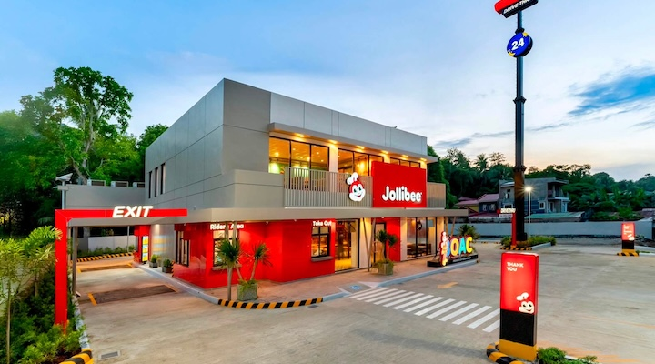
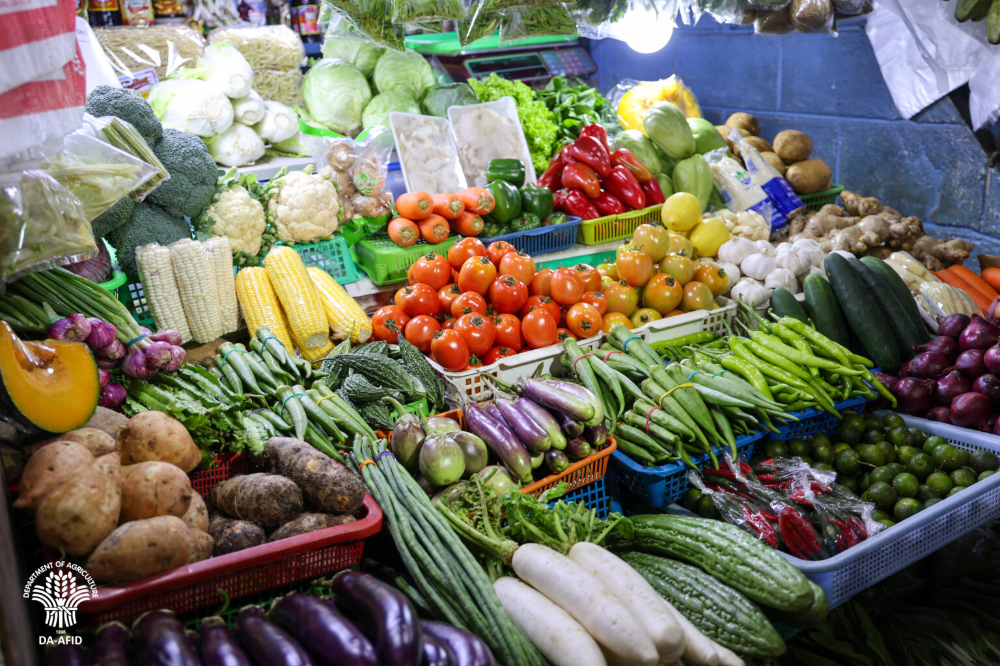
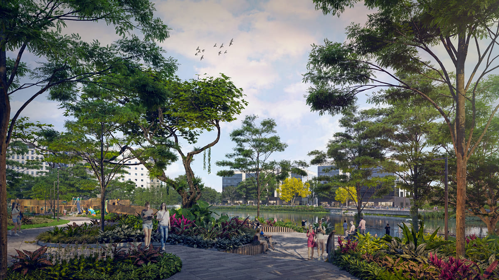

Tape
Jollibee Foods: record Q2 NIAT ₱3.4B (+5.7% YoY); system-wide sales +14.2%; international SWS +25.4% (Highlands +46.7%, Compose +39.7%); PH SWS +5.7% but PH same-store only +1.3% (group SSS +2.7%). Network 10,767 stores / 33 countries; ~70% franchised; JFCI spin-off listing pivots to Hong Kong (was US). PSA Aug: headline 6.1% (from 6.2%); food inflation 4.6% (from 5.3%); vegetables −3.4% after +8.4% in July; rice inflation 19.4% (from 17.1%) — rice alone ~1.3pp of headline; diesel +55.7% YoY. DA: supplies ok now, but typhoons/habagat risk veg and fish up in coming weeks; El Niño buffer still driving import front-load. Ayala Malls Nuvali: late-2026 open with Chili’s, The Matcha Tokyo, One World Deli plus Nike Rise / Foot Locker; Nuvali Technohub ready for BPO locators; Broadfield Makro still the Biñan wholesale anchor.
For Calamba: PH SSS at 1.3% means the home market is soft even while JFC prints a record — value day-parts still own lunch. Kitchen: don’t celebrate the veg cool-off; rice stays the plate tax and DA already flags storm rebound on greens and fish. Catchment: Ayala Malls Nuvali (not SM Nuvali) is the Q4 south dining magnet — BPO Technohub + Chili’s/Matcha traffic is the lunch and weekend lane to map before lease sheets harden.

JFC prints a record — growth is overseas
8–11 Sep 2026
Jollibee Foods Corporation posted a record ₱3.4 billion quarterly net income attributable to equity holders in Q2 2026 (+5.7% YoY), with consolidated revenues +10.7% and system-wide sales +14.2%. The real story is geography: international system-wide sales jumped 25.4% (Highlands Coffee +46.7%, Compose Coffee +39.7%, EMEAA Philippine brands +25.3%, Tim Ho Wan +23%, Jollibee North America +21.6%). The Philippine business grew system-wide sales 5.7% (Mang Inasal +10.7%, Jollibee +6.6%), but same-store sales at home were only 1.3% versus 4.4% international. Network: 10,767 stores across 33 countries (~70% franchised), including Shabu All Day’s 172 stores. Transition costs (~₱239M) hit as Yonghe King and Smashburger shift toward franchising. Parallel move: JFCI’s planned spin-off listing switched from a US float to Hong Kong — Inside Retail’s read is that Asia is where compounding happens, with Hong Kong matching the store base. COO/opener take: don’t copy their P&L. Soft PH SSS plus the ₱99 floor war means the home market still fights on value tickets. Franchise and capital-light is their next chapter; yours is still who owns Calamba lunch.
Open QSR Media · Open Inside Retail Asia

Food cools on paper — rice and storms don’t
4 Sep 2026
PSA: August headline inflation eased to 6.1% from 6.2%. Food and non-alcoholic beverages drove most of the slowdown — food inflation 4.6% from 5.3% — as vegetables, tubers, plantains, cooking bananas and pulses swung to a 3.4% decline from an 8.4% rise in July, and fish inflation slowed to 6.6% from 7.8%. Rice went the other way: 19.4% from 17.1%, highest since July 2024, contributing about 1.3 percentage points to headline and nearly four-fifths of food inflation. Regular-milled rice still averaged ~₱46.20/kg in Metro Manila and ~₱49.85 outside — P20 rice exists but is not universal. Transport inflation accelerated to 13.5% as diesel ran +55.7% YoY. DA Secretary Tiu Laurel: supplies adequate for now, but recent typhoons and enhanced southwest monsoon could push vegetable and fish prices higher in the coming weeks — “the bigger near-term concern is food inflation in high-value crops and fishery products.” Kitchen read: the veg cool-off is a gift, not a trend. Lock dual sources on greens and fish before the next flood tape; rice and diesel stay on every plate cost sheet.
Open Rappler / PSA · Open DA

Ayala Malls Nuvali: Chili’s, Matcha, BPO lunch
7 Aug 2026
Ayala Land’s Rising South update: Ayala Malls Nuvali is targeted for late 2026 with a dining and lifestyle mix that includes Chili’s, The Matcha Tokyo, One World Deli, Harlan + Holden, plus Nike Rise, Foot Locker, Nitori, Ashley, Belo, Wilson, Sports Direct, and Anko. Separate from SM Nuvali (Nov 27 flag) — this is the Ayala mall on the Lakeside District. Seda Nuvali is refreshing Misto and Pool Bar under Chef Leon Miguel Pengson; Nuvali Technohub is ready for BPO and corporate locators; Enara and Sereneo add residential; lake boat rides return October 2026. Broadfield (Biñan) still getting Makro as the wholesale anchor next to De La Salle Laguna. Opener/COO read: Santa Rosa–Calamba lunch density rises when Technohub fills and two Nuvali malls open months apart. Map weekend family traffic and weekday BPO tickets now — Chili’s/Matcha aren’t your competitors on price, but they set the south dining expectation and steal the leisure day-part. Lease and catering asks harden when both malls go live.
Open Philstar Property